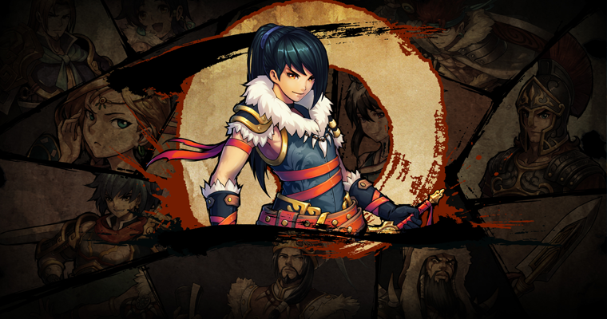

首页->正文内容
《西域英雄》致力于打造全新手游，将实时策略RTS与RPG完美融合，让玩家有全新的体验！《西域英雄》抛弃纯粹的战力PK，枯燥的战斗过程，全新的“划线操作”让玩家体验真正的策略魅力！
【西域英雄】
《西域英雄》采用划线操作模式，玩家点击角色后，可以任意划线，无论直线、曲线、弧形都可以根据你的指示进行移动，这给了玩家无限的想象空间。迂回作战，从敌人后方突击、诱敌深入逐个击破、从中突击分离敌人，如何与敌人作战，都在于玩家的选择。
【划线操作】
在《西域英雄》中，角色带领兵团出征时经常需要面对数个可操控单位，玩家可根据实际情况指挥不同的单位进行实时操作。例如单将诱敌深入后的群攻灭敌；也能操控一队迂回出击，其他队正面抗衡，进行两面夹击；玩家需要根据实际情况分析，利用优势进行布局，争取最小伤亡取得战争胜利！
【多线操控】
同时，如果需要急行军般集体移动，只需要双击主帅即可即时选择中所有兵团，划线控制集体移动，方便玩家快速移动兵团，避免逐个划动的繁琐操作！
【集体行动】
关于《西域英雄》
《西域英雄》是深圳牛蛙互动斥资千万、历时两年精心打造的一款实时策略RPG手游，由即将热映的同名电视剧改编而成，讲述了西汉陈汤将军在西域平定匈奴的传奇故事。
游戏以特色 “划线”操作模式实现多单位精准操控。玩家可利用地形策略、兵种克制、丰富的武将技以及多变的军师技重现恢弘的战争场面；独创攻城战塔防策略玩法、绿色RPG养成体系、全球同服、自由交易，打造史诗级古战争手游大作。
更多信息请关注：
《西域英雄》官网：http://xy.niuwa123.com